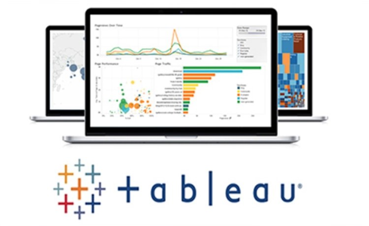

In this project, I used SQL to clean housing datasets, rename some
columns, standardize the date format, populate empty addresses
using parcel ID, separate addresses (Address & Column) into
different columns, delete unused columns.


In this project, I used SQL to explore the dataset from a Pizza
company to know the total revenue, the average order, the total
pizzas sold, the total orders, the average pizza per order, daily
trend, top 5 best and top 5 worst sellers etc, before exploring
and visualizing it in Excel or Power BI.
In this project, I used Excel to explore the dataset from a Pizza
company to know the total revenue, average order, the total pizzas
sold, the total orders, average pizza per order, daily trend, top
5 best and top 5 worst sellers, percentage of sales by pizza
Category, percentage of Sales by Pizza Size, total Pizza sold by
pizza Category.

In this project, I used Power BI to explore the dataset from a
Pizza company to know the total revenue, average order, the total
pizzas sold, the total orders, average pizza per order, daily
trend, top 5 best and top 5 worst sellers, percentage of sales by
pizza Category, percentage of Sales by Pizza Size, total Pizza
sold by pizza Category.

In this project, I used Power BI to explore the survey dataset of
people all over the world to know their favourite programming
language, average salary by job title, the total number of survey
takers, the average age of survey takers, happiness with work/life
balance, and happiness with salary.

In this project, I used Tableau to explore the Netflix dataset to
know the top 10 movie genres, total movies & TV shows by year, the
movies & TV distribution, the total movies & TV shows by year,
ratings of different TV shows, release year of the movie or TV
show, duration, date added, and total movies & TV shows by
country. I also included a slicer to enable one select the title
of the movie or TV show.

This project contains two sections (A & B). Section A involves
part of my work during my 6-month internship program where I used
Python to create multiple plots and analyzed data from our
excavation site in Singapore. Section B involves using Python to
analyze data from an Indian company to know the gender with more
purchasing power,the most sold products, occupation of customers
etc.